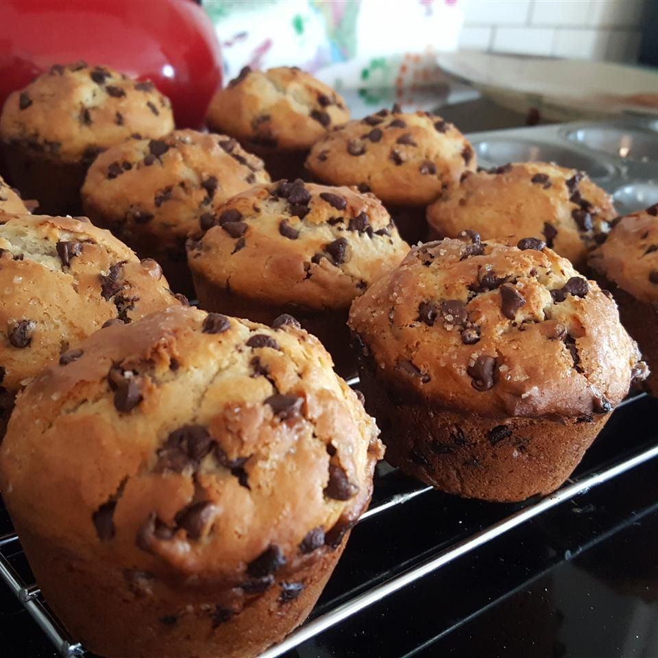

Chocolate Chip Muffin

These chocolate chip muffins are simply delicious. You won't believe how easy and quick they are to make!
Start your day in the sweetest way: With this chocolate chip muffin recipe!
Chocolate Chip Muffin Ingredients
These are the ingredients you'll need to make this top-rated chocolate chip muffin recipe at home:
- Milk: This moist chocolate chip muffin recipe starts with milk
- Oil: Instead of butter, this recipe calls for a neutral oil (such as vegetable oil)
- Egg: An egg lends moisture and acts as a binder, which means it helps hold the batter together
- Flour: All-purpose flour gives the batter structure
- Sugars: You'll need white and brown sugars for this sweet recipe
- Baking powder: Baking powder acts as a leavener, which means it helps the batter rise
- Salt: A pinch of salt enhances the overall flavor of the muffins, but it won't make them taste salty
- Chocolate chips: Of course, you'll need chocolate chips!